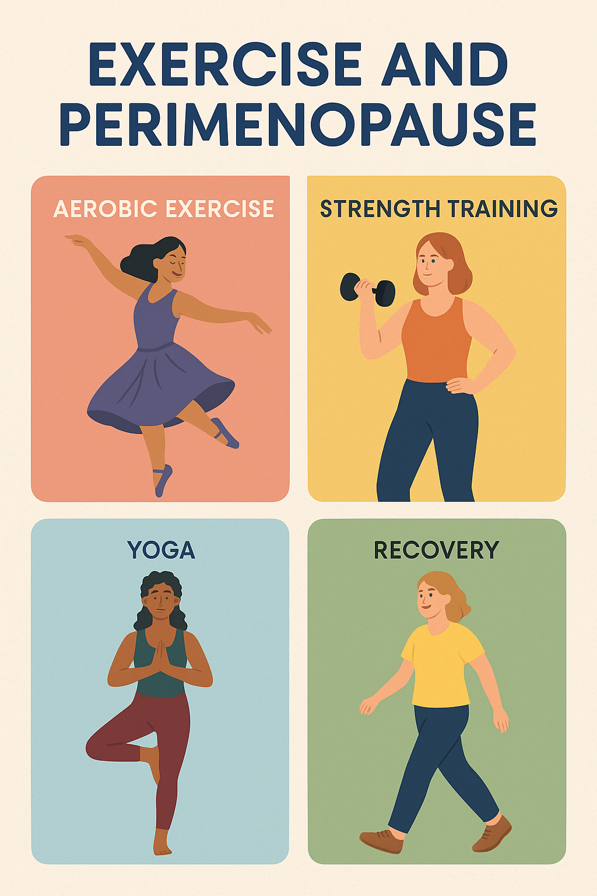

Perimenopause and Exercise: What Really Works
Perimenopause is often painted as a “transition you just survive until menopause”, but the way we move during this period can actually transform how you experience it. As hormonal fluctuations begin, many people face symptoms like hot flashes, sleep disruption, mood changes, and shifting body composition.
The good news: growing evidence shows that regular physical activity—not just for fitness, but as intentional movement—can ease many of those symptoms and build resilience for the years ahead.
In this piece, I’ll walk you through the science, practical strategies, and mindset shifts that make exercise a powerful tool through this chapter of your life.
What’s going on in perimenopause, and how movement helps
Before we dive into “what to do,” let’s understand why exercise helps. Here are some of the key mechanisms and benefits grounded in research and clinical guidance:
Hormones, thermoregulation, and hot flashes
Hot flashes (or “vasomotor symptoms”) are among the most common; up to 80% of people experience them.
One proposed mechanism is that hormonal shifts narrow the “thermoneutral zone” (the stable range in which your body doesn’t feel the need to sweat or shiver). Subtle fluctuations in core temperature can more easily trigger a flash.
Some exercise trials suggest that training may help stabilize thermoregulatory control—lowering resting core body temperature and improving skin blood flow/sweating responsiveness—leading to fewer hot flashes.
That said, not all studies show a robust effect on hot flashes, so movement is not a guaranteed cure—but many women report a meaningful reduction in intensity or frequency.
Mood, sleep, cognition
Exercise triggers the release of endorphins, serotonin, dopamine, and brain-derived neurotrophic factor (BDNF)—all of which support mood regulation and cognitive health.
A 2024 meta-analysis of mind-body exercise (e.g., yoga, tai chi) found positive effects on sleep quality, anxiety, and bone density in perimenopausal/menopausal women.
Randomized trials in sedentary women have shown that 12 weeks of moderate exercise improved sleep, reduced depressive symptoms, and enhanced overall quality of life.
Body composition, metabolism & cardiometabolic health
With perimenopause, many notice weight gain (especially around the waist), reduced lean muscle mass, and shifts in fat distribution.
Exercise is a cornerstone for preventing or reversing that drift. It helps preserve lean mass, improve insulin sensitivity, regulate blood lipids, and support healthy body composition.
Strong evidence shows that regular physical activity lowers risk for chronic diseases (heart disease, type 2 diabetes, etc.) across the lifespan—benefits that become even more critical in midlife.
Bone and joint health
Estrogen loss accelerates bone remodeling imbalance, raising the risk of osteoporosis and fractures.
Weight-bearing and resistance exercises place mechanical loads on bone, stimulating bone formation and maintenance. In perimenopause, this stress is particularly important.
A 2023 review of strength training in menopausal women found improvements in bone mineral density, muscle strength, and hormonal markers versus inactive controls.
Resistance training is also beneficial for joint stability, muscle balance, and reducing pain (especially when joints feel achy).

What “regular physical activity” looks like in perimenopause
To get the full spectrum of benefits, a balanced approach works best: blend cardiovascular, strength/resistance, flexibility/mobility, and mind-body movement. Here’s a guideline:
1. Cardiovascular / aerobic (moderate to vigorous)
Aim for 150 minutes per week of moderate-intensity activity (e.g., brisk walking, cycling, swimming), or 75 minutes of vigorous activity. The key is consistency—sustained movement over weeks and months.
2. Strength / resistance training
Two to three sessions per week is a solid goal. Focus on compound movements like squats, lunges, push-ups, and rows. You can use dumbbells, resistance bands, or your own body weight.
Benefits: preserves muscle mass, drives bone remodeling, supports metabolism, and improves balance.
3. Flexibility, mobility, and functional movement
Incorporate daily gentle stretching, mobility work, and functional movements that help maintain fluidity and posture.
4. Mind-body / restorative movement
Yoga, Pilates, tai chi, and qigong can offer overlapping benefits: stress reduction, flexibility, balance, improved sleep, and mood.
Honor Your Energy: When to Pull Back
One of the most important and rarely celebrated principles in perimenopause: your body has its own wisdom. On low-energy days, swap HIIT or heavy lifting for lighter activities like walking, stretching, or yoga.
Listening to your body prevents fatigue, injury, and burnout—allowing you to stay consistent long-term.
Tips to Stay Consistent, Safe, and Sustainable
Exercise is a powerful complement, not a cure-all. Severe symptoms may still require medical or hormonal interventions.
Some symptom relief (e.g., hot flashes) has mixed results in the literature; your individual response may vary.
Always check with your healthcare provider if you have comorbidities, injuries, or conditions that might complicate certain exercises.
Movement must be sustained over time; benefits accrue over months, not weeks.
The Big Picture: Movement as Medicine & Empowerment
Perimenopause can feel like a roller-coaster; your body, mood, and energy shift in unpredictable ways. But the act of moving with intention becomes something powerful: a daily reminder that even in transition, you can cultivate strength, resilience, and joy.
Exercise is not just about “fighting” symptoms. It’s an act of self-care and connection—a way to honor your changing body and build your foundation for the decades ahead.